Steady two-dimensional flow in the vertical plane
Contents

The Python code provided below is from
Analytical Groundwater Modeling: Theory and Applications Using Python
by Mark Bakker and Vincent Post
ISBN 9781138029392
The book is published by CRC press and is available here.
This Notebook is provided under the MIT license.
© 2022 Mark Bakker and Vincent Post
Steady two-dimensional flow in the vertical plane#
%matplotlib inline
import numpy as np
import matplotlib.pyplot as plt
plt.rcParams["figure.figsize"] = (8, 3) # set default figure size
plt.rcParams["contour.negative_linestyle"] = 'solid' # set default line style
plt.rcParams["figure.autolayout"] = True # same at tight_layout after every plot
Vertical anisotropy#
# parameters
L = 1000 # length of domain, m
B = 300 # width of domain, m
kx = 5 # hydraulic conductivity in x-direction, m/d
kz = 1 # hydraulic conductivity in z-direction, m/d
a = -0.002 # head gradient in x and z directions
# solution
kt = np.sqrt(kx * kz)
qxt = -kt * a / np.sqrt(kz / kx)
qzt = -kt * a
xg, zg = np.meshgrid(np.linspace(0, L, 10), np.linspace(0, B, 10))
xt = xg * np.sqrt(kz / kx)
zt = zg
zetat = xt + 1j * zt
omt = -(qxt - 1j * qzt) * zetat
h = omt.real / kt
psi = omt.imag
# basic flow net
plt.subplot(121, aspect=1) # problem domain
plt.contour(xg, zg, h, 10, colors='C0')
plt.contour(xg, zg, psi, 10, colors='C1')
plt.xlabel('x (m)')
plt.ylabel('z (m)')
plt.subplot(122, aspect=1) # transformed domain
plt.contour(xt, zt, h, 20, colors='C0')
plt.contour(xt, zt, psi, 20, colors='C1')
plt.xlabel(r'$\tilde{x}$')
plt.ylabel(r'$\tilde{z}$');
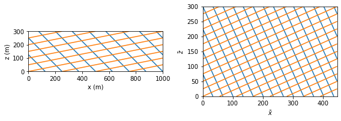
Flow to a partially penetrating stream#
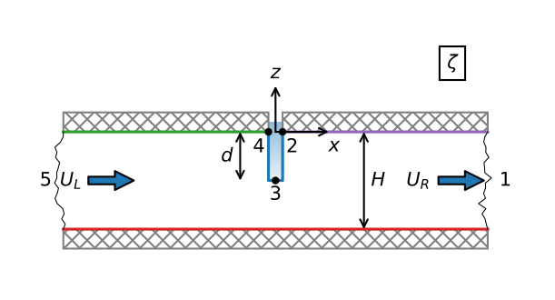# parameters
k = 10 # hydraulic conductivity, m/d
H = 10 # thickness of aquifer, m
d = 4 # depth of stream, m
UL = 0.2 # uniform flow far to the left, m^2/d
UR = -0.2 # uniform flow far to the right, m^2/d
hs = 0 # water level in stream
# solution
def zetafunc(tau, H=H, d=d):
mu = np.tan(np.pi * d / (2 * H))
lab = (-mu + np.sqrt(mu**2 + 1))**2
z = -H / np.pi * np.log((tau - 1) / (tau + 1)) + \
H / np.pi * np.log((tau - lab) / (tau + lab))
return z
def taufunc(zeta, H=H, d=d):
mu = np.tan(np.pi * d / (2 * H))
lab = (-mu + np.sqrt(mu**2 + 1))**2
Z = np.exp(np.pi * zeta / H)
tau = (1 - lab) * (Z + 1) / (2 * (Z - 1)) + 0.5 * np.sqrt(
((lab - 1) * (Z + 1) / (Z - 1)) ** 2 + 4 * lab)
return tau
# verification
tau = 1.5 + 0j
zeta = zetafunc(tau)
print(f'given tau between points 1 and 2: {tau:.2f}')
print(f'zeta between points 1 and 2: {zeta:.2f}')
print(f'tau as function of zeta: {taufunc(zeta):.2f}')
given tau between points 1 and 2: 1.50+0.00j
zeta between points 1 and 2: 4.01+0.00j
tau as function of zeta: 1.50+0.00j
# solution
def omegafunc(tau, UL=UL, UR=UR, H=H, d=d, k=k, hs=0):
mu = np.tan(np.pi * d / (2 * H))
lab = (-mu + np.sqrt(mu**2 + 1))**2
om = -UL / np.pi * np.log((tau - lab) / (tau + lab)) + \
UR / np.pi * np.log((tau - 1) / (tau + 1)) + k * hs
return om
# omega transformed domain
xi, eta = np.meshgrid(np.linspace(0, 2, 100), np.linspace(0, 1.5, 100))
om_ref_plane = omegafunc(xi + eta * 1j)
# omega physical domain
xg, zg = np.meshgrid(np.linspace(-4 * H, 4 * H, 400), np.linspace(-H, 0, 100))
taug = taufunc(xg + zg * 1j)
omega = omegafunc(taug)
h = omega.real / k
# basic plot flow net in transformed domain (right graph)
plt.subplot(111, aspect=1)
plt.contour(xi, eta, om_ref_plane.real, 20, colors='C0')
plt.contour(xi, eta, om_ref_plane.imag, 20, colors='C1')
plt.xlabel(r'$\xi$')
plt.ylabel(r'$\eta$');
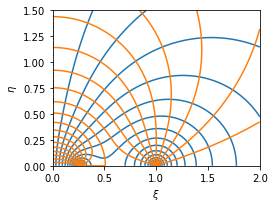
# basic flow net
plt.subplot(111, aspect=1, xlim=(-40, 10))
plt.contour(xg, zg, h, np.arange(0, 0.1, 0.0025), colors='C0')
plt.contour(xg, zg, omega.imag, np.arange(-0.4, 0.4, 0.025), colors='C1')
plt.xlabel('x (m)')
plt.ylabel('z (m)');
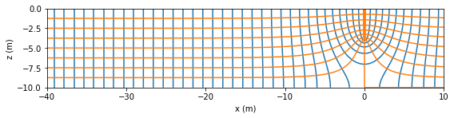
# anisotropic parameters
kx = 10 # m/d
kz = 1 # m/d
# anisotropic solution
ktilde = np.sqrt(kx * kz)
xgtilde = xg * np.sqrt(kz / kx)
zgtilde = zg
omega_aniso = omegafunc(taufunc(xgtilde + zgtilde * 1j))
h_aniso = omega_aniso.real / ktilde
psi_aniso = omega_aniso.imag
# basic flow net
plt.subplot(111, aspect=1, xlim=(-40, 10))
plt.contour(xg, zg, h_aniso, np.arange(0, 0.2, 0.002), colors='C0')
plt.contour(xg, zg, psi_aniso, np.arange(-0.4, 0.4, 0.02), colors='C1')
plt.xlabel('x (m)')
plt.ylabel('z (m)');
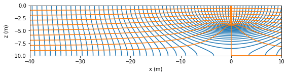
# computation of C
def head0(z, UL=UL, UR=UR, H=H, d=d):
zeta = 0 + z * 1j
tau = taufunc(zeta, H=H, d=d)
return omegafunc(tau, UL=UL, UR=UR, H=H, d=d).real / np.sqrt(kx * kz)
from scipy.integrate import quad
h0avg = quad(head0, a=-H, b=0, args=(UL, UR))[0] / H
C = (UL - UR) / (h0avg - 0)
print(f'Effective conducatance: C={C:.2f} m^2/d')
print(f'Dupuit head h0={h0avg:.3f} m for UL={UL} m^2/d and UR={UR} m^2/d')
---------------------------------------------------------------------------
ModuleNotFoundError Traceback (most recent call last)
Input In [14], in <cell line: 7>()
4 tau = taufunc(zeta, H=H, d=d)
5 return omegafunc(tau, UL=UL, UR=UR, H=H, d=d).real / np.sqrt(kx * kz)
----> 7 from scipy.integrate import quad
8 h0avg = quad(head0, a=-H, b=0, args=(UL, UR))[0] / H
9 C = (UL - UR) / (h0avg - 0)
ModuleNotFoundError: No module named 'scipy'
# Dupuit solution
L = 40 # distance over which Dupuit solution is computed
h0 = 0
xdupuit = [-L, 0, L]
hdupuit1 = [UL * L / (k * H) + h0, h0, -UR * L / (k * H) + h0]
# basic plot
plt.plot(xg[0], h_aniso[-1], 'C0', label='$z=0$')
plt.plot(xg[0], h_aniso[0], 'C0--', label='$z=-H$')
plt.plot(xdupuit, hdupuit1, 'C3', label='Dupuit w/o $C$')
plt.ylabel('head (m)')
plt.grid()
plt.legend(loc='lower right');
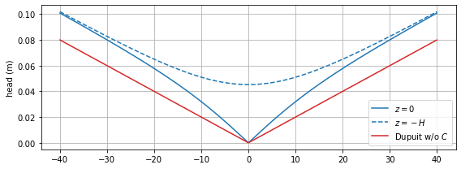
# Dupuit solution with effective conductance
h0 = hs + (UL - UR) / C
hdupuit2 = [UL * L / (k * H) + h0, h0, -UR * L / (k * H) + h0]
# basic plot
plt.plot(xg[0], h_aniso[-1], 'C0', label='$z=0$')
plt.plot(xg[0], h_aniso[0], 'C0--', label='$z=-H$')
plt.plot(xdupuit, hdupuit2, 'C3', label='Dupuit w/ $C$')
plt.xlabel('x (m)')
plt.ylabel('head (m)')
plt.grid()
plt.legend(loc='lower right');
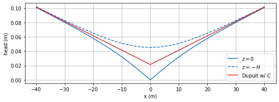
URlist = [-0.04, 0.04, 0.08]
for UR in URlist:
xg, zg = np.meshgrid(np.linspace(-2 * H, 2 * H, 400), np.linspace(-H, 0, 100))
taug = taufunc(xg + zg * 1j)
omega = omegafunc(taug, UR=UR)
h = omega.real / k
plt.figure()
plt.subplot(111, aspect=1)
plt.contour(xg, zg, h, np.arange(0, 0.1, 0.0025), colors='C0')
plt.contour(xg, zg, omega.imag, np.arange(-0.4, 0.4, 0.025), colors='C1')
plt.plot([0, 0], [0, -d], 'k')
plt.xlabel('x (m)')
plt.ylabel('z (m)');
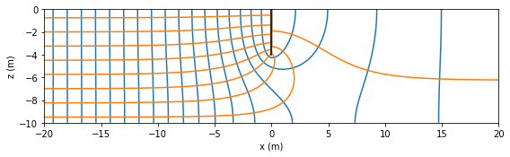
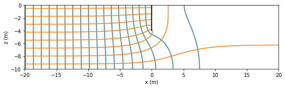
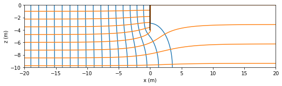
Flow over a step in the base#
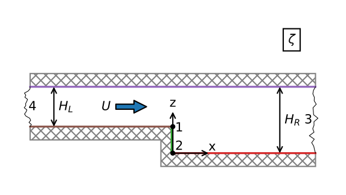# parameters
k = 10 # hydraulic conductivity, m/d
HL = 10 # aquifer thickness on left side, m
HR = 20 # aquifer thickness on right side, m
U = 0.1 # flow from left to right, m^2/d
# solution
def zetafunc(tau, HR=HR, HL=HL):
lab = HL / HR
zeta = -HR / np.pi * np.log((tau - lab) / (tau + lab)) + \
HL / np.pi * np.log((tau - 1) / (tau + 1)) + \
(HR - HL) * 1j
return zeta
def omegafunc(tau, U=U, HR=HR, HL=HL):
lab = HL / HR
omega = -U / np.pi * np.log((tau - 1) * (tau + 1)) + \
U / np.pi * np.log((tau - lab) * (tau + lab) / lab ** 2)
return omega
# grid
d = 1e-14 # small offset
lab = HL / HR
xi1 = np.linspace(0, lab - d, 400)
xi2 = np.linspace(lab + d, 1 - d, 400)
xi3 = np.linspace(1 + d, 40, 400)
eta1 = np.linspace(0, 1, 400)
eta2 = np.linspace(1, 40, 400)
xi, eta = np.meshgrid(np.hstack((xi1, xi2, xi3)), np.hstack((eta1, eta2)))
zeta = zetafunc(xi + eta * 1j)
omega = omegafunc(xi + eta * 1j)
# basic plot
plt.subplot(111, aspect=1, xlim=(-20, 20))
plt.contour(zeta.real, zeta.imag, omega.real / k, np.arange(-0.1, 0.1, 0.002), colors='C0')
plt.contour(zeta.real, zeta.imag, omega.imag, np.arange(-0.1, 0, 0.02), colors='C1')
plt.plot([-40, 0, 0, 40], [10, 10, 0, 0], 'k')
plt.xlabel('x (m)')
plt.ylabel('z (m)');
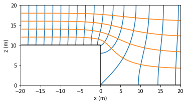
print(f'complex location of point 2: {zetafunc(1e-12j + 1e-12j):.2f}')
print(f'complex potential at point 2: {omegafunc(1e-12 + 1e-12j):.2f}')
print(f'complex location of point 4: {zetafunc(1e12 + 1e12j):.2f}')
print(f'complex location of point tau=0.7: {zetafunc(0.7 + 1e-12j):.2f}')
print(f'complex potential at point tau=0.7: {omegafunc(0.7 + 1e-12j):.2f}')
complex location of point 2: -0.00+0.00j
complex potential at point 2: 0.00+0.00j
complex location of point 4: 0.00+10.00j
complex location of point tau=0.7: 5.89+20.00j
complex potential at point tau=0.7: 0.02-0.10j
def findtau(tauvec, x, z):
tau = tauvec[0] + tauvec[1] * 1j
zetastar = zetafunc(tau)
return ((zetastar.real - x) ** 2 + (zetastar.imag - z) ** 2)
from scipy.optimize import fmin
xi0, eta0 = fmin(findtau, (1, 1), args=(-50, 20), disp=0)
tau0 = xi0 + eta0 * 1j
print(f'tau: {tau0}')
print(f'zeta: {zetafunc(tau0)}')
tau: (0.9999999664789975+1.245910302309445e-11j)
zeta: (-49.99698501153817+19.99881690414834j)
# additional parameters anisotropic case 1
kx = 10 # horizontal hydraulic conductivity, m/d
kz = 1 # vertical hydraulic conductivity, m/d
# solution anisotropic case
ktilde = np.sqrt(kx * kz)
zetaaniso = zetafunc(xi + eta * 1j)
omeganiso = omegafunc(xi + eta * 1j)
xg = zetaaniso.real / np.sqrt(kz / kx)
zg = zetaaniso.imag
h = omeganiso.real / ktilde
psi = omeganiso.imag
# basic plot anistropic case
plt.subplot(111, aspect=1, xlim=(-20, 60))
plt.contour(xg, zg, h, np.arange(-0.1, 0.1, 0.002), colors='C0')
plt.contour(xg, zg, psi, np.arange(-0.1, 0, 0.02), colors='C1')
plt.plot([-40, 0, 0, 40], [10, 10, 0, 0], 'k')
plt.xlabel('x (m)')
plt.ylabel('z (m)');
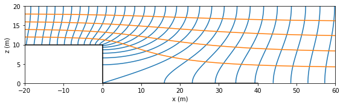
# additional parameters anisotropic case 2
kx = 10 # horizontal hydraulic conductivity, m/d
kz = 1000 # vertical hydraulic conductivity, m/d
# solution anisotropic case 1
ktilde = np.sqrt(kx * kz)
zetaaniso = zetafunc(xi + eta * 1j)
omeganiso = omegafunc(xi + eta * 1j)
xg = zetaaniso.real / np.sqrt(kz / kx)
zg = zetaaniso.imag
h = omeganiso.real / ktilde
psi = omeganiso.imag
plt.subplot(111, aspect=1, xlim=(-10, 20))
plt.contour(xg, zg, h, np.arange(-0.1, 0.1, 0.002), colors='C0')
plt.contour(xg, zg, psi, np.arange(-0.1, 0, 0.02), colors='C1')
plt.plot([-10, 0, 0, 20], [10, 10, 0, 0], 'k')
plt.xlabel('x (m)')
plt.ylabel('z (m)');
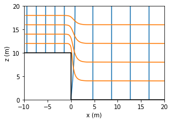
Spatially varying head at the top of the aquifer#
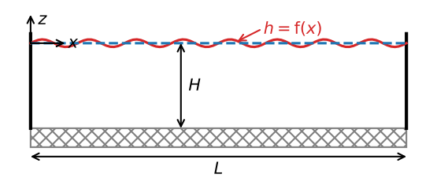# parameters
k = 1 # hydraulic conductivity, m/d
L = 1200 # length of aquifer, m
H = 200 # thickness of aquifer, m
a = 0.2 # amplitude of head variation, m
p = 2 * L / 3 # period of head variation, m
A = k * a # amplitude of potential variation, m^2/d
# solution
def omega(x, z, H, A, p):
zeta = x + 1j * z
return A * np.cos(2 * np.pi * (zeta + H * 1j) / p) / \
np.cosh(2 * np.pi * H / p)
def discomplex(x, z, H, A, p):
zeta = x + 1j * z
return 2 * np.pi * A / p * np.sin(2 * np.pi * (zeta + H * 1j) / p) / \
np.cosh(2 * np.pi * H / p)
xg, zg = np.meshgrid(np.linspace(0, L, 100), np.linspace(-H, 0, 100))
om = omega(xg, zg, H, A, p)
wdis = discomplex(xg, zg, H, A, p)
htop = om.real[-1] / k
qtop = -wdis.imag[-1]
# basic plot h, qz, flownet, sharing the x-axis
fig, ax = plt.subplots(3, 1, sharex=True, squeeze=True, figsize=[7, 3.5],
gridspec_kw={'height_ratios':[1, 1, 2]})
plt.sca(ax[0])
plt.plot(xg[0], htop)
plt.ylabel('htop (m)')
plt.grid()
plt.sca(ax[1])
plt.plot(xg[0], qtop)
plt.ylabel('qztop \n (mm/d)')
plt.grid()
plt.sca(ax[2])
plt.contour(xg, zg, om.real / k, np.arange(-0.2, 0.21, 0.02))
plt.contour(xg, zg, om.imag, np.arange(-0.2, 0.21, 0.02))
plt.xlabel('x (m)')
plt.ylabel('z (m)')
plt.axis('scaled');
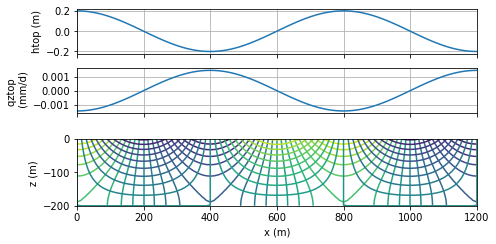
# solution for flow cell of 1200 m
L = 1200
p = 2 * L # one flow cell
x = np.linspace(0, L, 100)
Qx2D = -omega(x, 0, H, A, p).imag # Qx2D = -psi
QxDupuit = k * H * a * 2 * np.pi / p * np.sin(2 * np.pi * x / p)
# grid of stream function
xg, zg = np.meshgrid(np.linspace(0, L, 400), np.linspace(-H, 0, 100))
psi2D = omega(xg, zg, H, A, p).imag
xd = xg[0]
zd = [-H, 0]
psiDupuit = np.zeros((2, len(xd)))
psiDupuit[1] = -k * H * a * 2 * np.pi / p * np.sin(2 * np.pi * xd / p)
# basic plot
plt.figure(figsize=[7, 3.5])
plt.subplot(211)
plt.plot(x, Qx2D, label='2D solution')
plt.plot(x, QxDupuit, label='Dupuit solution')
plt.ylabel('Qx (m$^2$/d)')
plt.grid()
plt.legend()
plt.subplot(212, aspect=1)
plt.contour(xg, zg, psi2D, np.arange(-0.2, 0, 0.02), colors='C1')
plt.contour(xd, zd, psiDupuit, np.arange(-0.2, 0, 0.02), colors='C0')
plt.xlabel('x (m)')
plt.ylabel('z (m)');
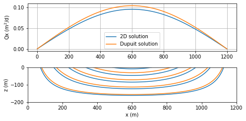
# additional parameters and changed parameters
delh = 2 # head drop over distance L, m
p = L / 3 # period of head varation, m
nterms = 100 # number of terms in Fourier series
# solution
xg, zg = np.meshgrid(np.linspace(0, L, 200), np.linspace(-H, 0, 200))
om = np.zeros(xg.shape, dtype='complex')
om -= 0.5 * delh
for n in range(1, nterms + 1, 2):
A = 4 * k * delh / (n ** 2 * np.pi ** 2)
om += omega(xg, zg, H, A, 2 * L / n)
om += omega(xg, zg, H, k * a, p)
htop = om.real[-1] / k
# basic flownet
plt.subplot(111, aspect=1)
plt.contour(xg, zg, om.real, 10, colors='C0')
plt.contour(xg, zg, om.imag, 10, colors='C1')
plt.xlabel('x (m)')
plt.ylabel('z (m)');
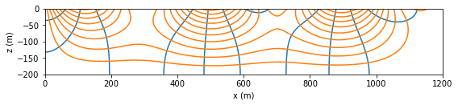
Interface flow towards the coast#
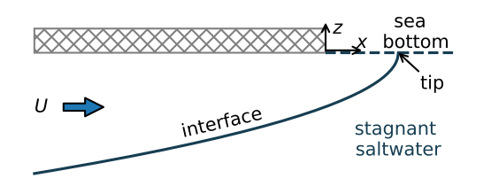# parameters
k = 10 # hydraulic conductivity, m/d
rhof = 1000 # density freshwater, kg/m^3
rhos = 1025 # density of saltwater, kg/m^3
U = 0.4 # flow towards the coast, m^2/d
# solution
alpha = rhof / (rhos - rhof)
n = 100
zeta_streamlines = []
zeta_equipotentials = []
for psi in np.linspace(0, U, 6):
omega = np.linspace(0, 2, n) + 1j * psi
zeta = -omega**2 * alpha / (2 * k * U)
zeta_streamlines.append(zeta)
for phi in np.arange(0, 2, U / 6):
omega = phi + 1j * np.linspace(0, U, n)
zeta = -omega**2 * alpha / (2 * k * U)
zeta_equipotentials.append(zeta)
zetatip = -(1j * U) ** 2 * alpha / (2 * k * U)
print(f'location of the tip: {zetatip.real: .2f} m')
location of the tip: 0.80 m
# basic plot
plt.subplot(111, aspect=1, xlim=(-15, 1))
for zeta in zeta_equipotentials:
plt.plot(zeta.real, zeta.imag, 'C0')
for zeta in zeta_streamlines:
plt.plot(zeta.real, zeta.imag, 'C1')
plt.xlabel('x (m)')
plt.ylabel('z (m)');
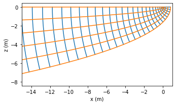
# additional parameters anisotropic case
kx = k
kz = k / 10
# isotropic solution
xtip = U * alpha / (2 * k)
xglover = np.linspace(-150, xtip, 100)
zglover = -np.sqrt(U * alpha / k * (U * alpha / k - 2 * xglover))
# aniosotropic solution
xtipaniso = U * alpha / (2 * kz)
xaniso = np.linspace(-150, xtipaniso, 200)
zaniso = -np.sqrt(U * alpha / kx * (U * alpha / kz - 2 * xaniso))
print(f'location of the tip for anisotropic case: {xtipaniso: 0.2f} m')
#
xdupuit = np.linspace(-150, 0, 100)
zdupuit = -np.sqrt(-2 * U * alpha * xdupuit / k)
location of the tip for anisotropic case: 8.00 m
# basic plot (Fig. 10.15)
plt.plot(xglover, zglover, 'C1', label='Glover $k_z=k_x$')
plt.plot(xaniso, zaniso, 'C2', label='Glover $k_z=k_x/10$')
plt.plot(xdupuit, zdupuit, 'C1--', label='Dupuit $H=20$')
plt.xlabel('x (m)')
plt.ylabel('z (m)')
plt.grid()
plt.legend();
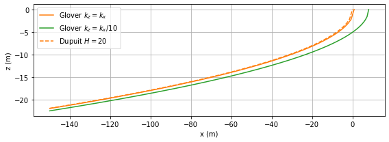
Interface flow below a strip island#
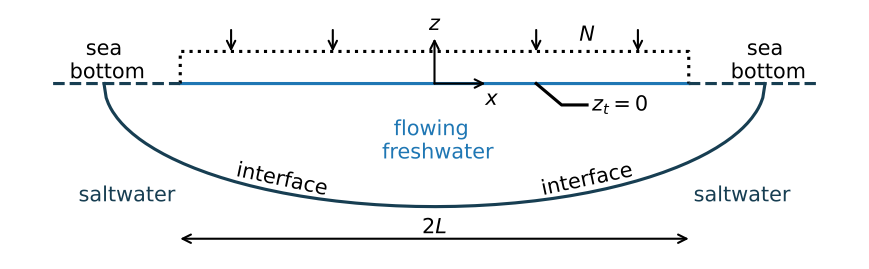# parameters
k = 10 # hydraulic conductivity, m/d
L = 1000 # half width of island, m
N = 0.001 # areal recharge, m/d
rhof = 1000 # density freshwater, kg/m^3
rhos = 1025 # density of saltwater, kg/m^3
alpha = rhof / (rhos - rhof)
# solution
def omega(zeta, k=k, alpha=alpha, L=L, N=N):
om = -1j * N * zeta + np.sqrt(N ** 2 * (L ** 2 - zeta ** 2) +
N * k * (L ** 2 - zeta ** 2) / alpha)
return om
# compute interface
ng = 201
xtip = L * np.sqrt(1 + N * alpha / k)
print(f'length outflow zone: {xtip - L:0.2f} m')
xi = np.linspace(-xtip + 1e-12, xtip - 1e-12, ng)
zi = -np.sqrt(N * alpha / k * L ** 2 - N * alpha / (N * alpha + k) * xi ** 2)
zcenter = -L * np.sqrt(N * alpha / k)
print(f'elevation of interface at center of island: {zcenter:0.2f} m')
# compute grid for contouring
xg = xi * np.ones((50, ng))
zg = np.zeros_like(xg)
for i in range(ng):
zg[:, i] = np.linspace(zi[i], -1e-12, 50)
om = omega(xg + 1j * zg)
length outflow zone: 2.00 m
elevation of interface at center of island: -63.25 m
# basic plot
plt.subplot(111, aspect=5, xlim=(-xtip, xtip))
plt.contour(xg, zg, om.imag, 20)
plt.contour(xg, zg, om.real, 20)
plt.plot(xi, zi, 'k')
plt.xlabel('x (m)')
plt.ylabel('z (m) - VE:5x');
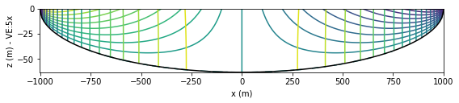
# additional parameters for anisotropic case
kx = k
kz = kx / 20
# solution
xtipaniso = L * np.sqrt(1 + N * alpha / kz)
xaniso = np.linspace(-xtipaniso + 1e-12, xtipaniso - 1e-12, 400)
zianiso = -np.sqrt(N * alpha / kx * L ** 2 -
N * alpha / (N * alpha + kz) * kz / kx * xaniso ** 2)
xdupuit = np.linspace(-L, L, 200)
zidupuit = -np.sqrt(N * alpha / kx * (L ** 2 - xdupuit ** 2))
# basic plot
plt.subplot(111, aspect=5)
plt.plot(xi, zi, label='2D, $k_z=k_x$')
plt.plot(xdupuit, zidupuit, '--', label='Dupuit')
plt.plot(xaniso, zianiso, label='2D, $k_z=k_x/20$')
plt.grid()
plt.xlabel('x (m)')
plt.ylabel('z (m) - VE:5x')
plt.legend();
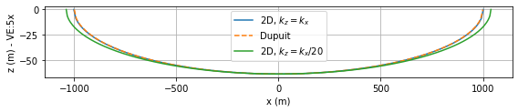